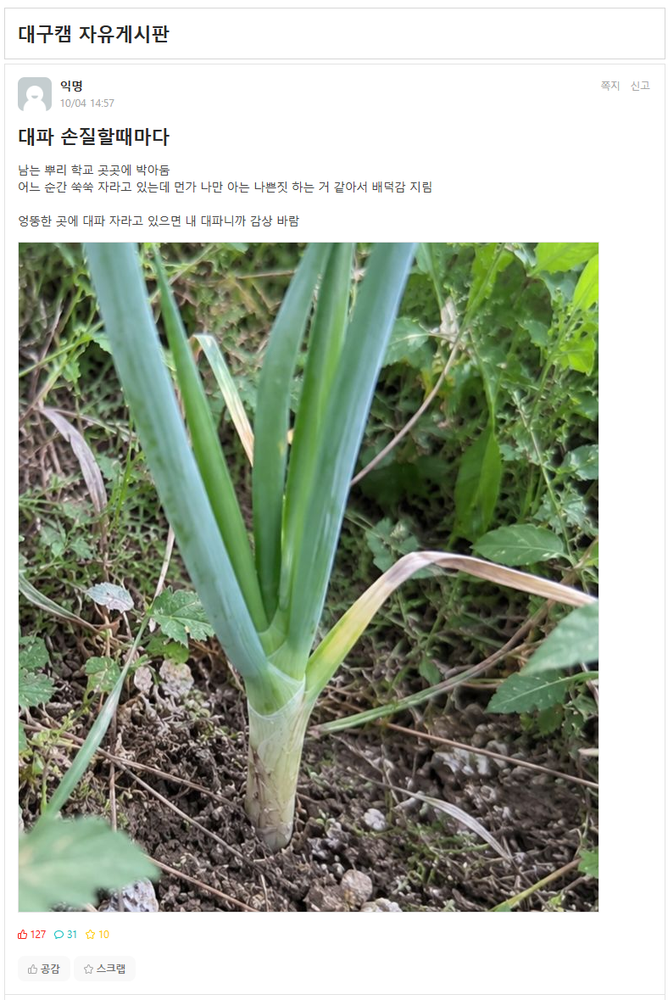

남은 대파를 학교에 처리하는 사람 ㄷㄷㄷㄷ
댓글
이 게시글 보고 대파 보일 때마다 노상방뇨하겠다는 미친 놈 등장하긴 했음
촌에는 다 그라고 키워서 물에 시쳐 먹고 다 했다.
그 귀한 해병수를...

두어번까지는 먹을 만 할 걸?
맛은 굉장히 안정적이야
걍 땅에 심으면 잘 자라나 보내 대파는 ㅋㅋㅋ
대파 쓰고 남은거 그냥 물컵에다 꽂아만 놔도 하루만에 자라난거 눈에 보임ㅋㅋㅋ
물컵에 꽂아 두면 자라긴 하는데 두께가 먹을때마다 얇아지는데
화분에다가 꼽아두면 먹을때마다 새 대파 먹는 느낌이고 향도 진해짐.
둘다 단점은 자를 때 손질 할 때 진액이 너무 심하게 나온다 정도?
뿌리가 상하긴 상해가지고 한 네번정도 잘라먹으면 맛탱이가서 안올라오긴 하더라 ㅋㅋㅋㅋ
대파는 냉장보관 안하고 마당에 심어두는 사람도 있음 ㅋㅋ
내가 저런거 하고 싶었는데 욕쳐먹을까봐 못했음
곳곳에 조금씩 심는 수준이면 해도 되는구나
내년에 수박으로 도전한다
ㅋㅋㅋ 나는 해봤는데 성공하면 쾌감 오짐
잘 대파 먹으세용~
남의 땅에 농작물 심으면 개꿀이지
파오린가?
직접 재료손질하고
남는거 잘챙겨서 다시 심는다???
존나 부지런한 사람임
저래서 우리 학교에 양딸기가 자라고 있었구나
젠장 또 경북대야
왜 내가 키잡하려 했던 대파는 안자라는거냐... 흙도 거름도 다 장챙겨 줬거늘...
나도 쪽파 대파 고추 키잡할랬는데..
모조리 실-패
근데 저렇게 심으면 겨울에도 버팀?
서리 직빵으로 맞으면 땅위로는 다 누렇게 말라 뒤지는데 봄되면 뿌리에서 싹 올라옴
나도 심어야지 뒷산에
-경북대학교-
대파 무라
맛은있으려나?